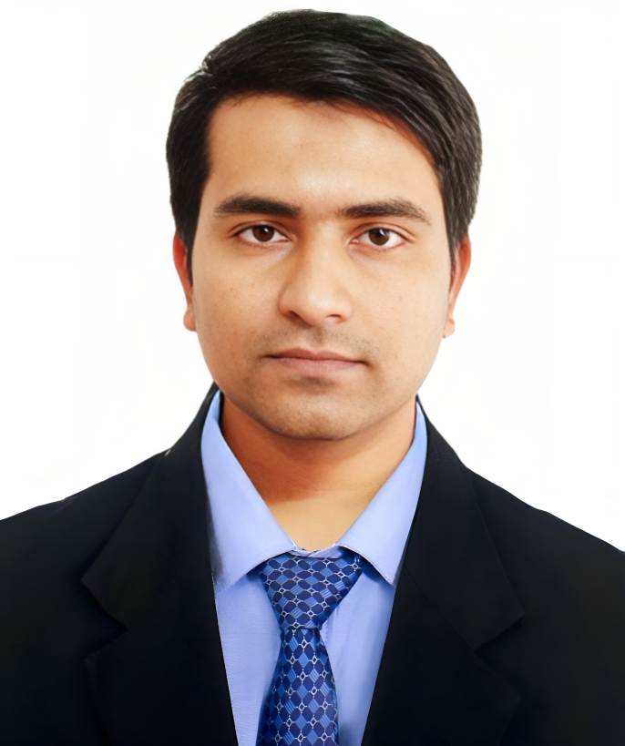

I am Toufcur Rahman (Torun). I was born in 1997 in a small village of Goalpara. The village is in Shailkupa Upzila in Jhenaidah district. I am the younger brother of the two sons. My father is MD. Habibar Rahman, and mother is called Mst. Masuda Parvin. My father is ex-Professor of a college and mother is mostly housewife. My elder brother, Tarek, is a Teacher under Primary and Mass Education, and his wife possesses same profession.
I was brought up in the village I mentioned and completed my primary education from a school of neighboring village. Notably, I got talent-pool scholarship in class of five. Then I got admitted into Kushtia Zilla School, one of the renowned schools of Khulna Division. From then we, my family, started living in kushtia town near to my school. At first, I couldn’t keep pace with the students of the town. They used to get better position in class. In class of Eight I was supervised by our sister-like tutor ‘Chumki Apu’. She accelerated me and pushed me to do better and I had. I also got Talent-pool scholarship in clas 8 and stood 2nd in District. I passed S.S.C. exam-2014 with GPA 5 out of 5. Then I got admitted to Notre Dame College, Dhaka. The day I sat for admission test in Notre Dame College was the first day I visited Dhaka city. The previous night I stayed Dhaka University’s Sargent Jahurul Haque Hall. I couldn’t forget the night of repeated vomiting due to bus journey.
I lived in Aramabag, Motijheel for one and a quarter of year of my study in college. The remaining days I lived in North Kamlapur, near the Bangladesh Bank. I passed HSC exam-2016 again with GPA 5 out of 5. After the undergraduate level admission test being done, I got admitted to Khulna University of Engineering & Technology (KUET). I studied Electronics and Communication Engineering (ECE) there.
Four years of KUET life was aesthetic. I learned so much, not only the academic stuffs but also the manner, punctuality, the capability of having pressure and act intelligent under the pressure. The 4 to 5 years of campus life has made me adaptive to competitive world. Though my campus life was not so cheerful. I remember just writing lab report and being prepared for Class Tests. I enjoyed the Labs. The practical sessions were informative. I always get good GPA in practical courses. My most favorite course was Digital Image Processing. The last two years of my graduation was brighter. I achieved ‘Deans Awards’ for two consecutive times.
The pandemic hit when I was in my 7th semester. We left the campus and stayed home for a year. The pandemic taught me a lot. Though the news of death and emergency situation concerned me a lot, I got a lot of time to spend with my family. There is no pressure of study. Some classes were conducted through online and some flexible online based assessments. So, I spent those days flying kites, programming in computer, watching dramas. As in rural village, there is no significant loss or death nearby, so we enjoyed roaming around the village area. I learned bike riding during the pandemic.
After the ‘corona days’ being over I went back to KUET and finished my remaining phase of studies. I conducted research on Machine Learning in Disease Detection Technology. After collecting my certificates, I returned home. I once thought of going for MSc. at KUET, but paced back. Then I started being prepared for Govt. sector jobs. I preferred IT related Govt job first. I sat for an examination for the post of assistant programmer of BARI. That was my first job examination. I got the chance to face the viva board but failed. After that I sat for 2 or 3 three Exams, for example, Bangladesh Bank AD, BCS preliminary, NPCBL etc. I failed in all cases. Then being disappointed, I focused more, went for another IT Exam taken by BIRTAN and got a chance to hold a position as Assistant Programmer at BIRTAN.
Now, I am an Assistant Programmer at Bangladesh Institute of Research and Training on Applied Nutrition (BIRTAN). This is an institute under Ministry of Agriculture. It is at Bishanandi, in Arahazar, an Upzila of Narayanganj District. Our office is surrounded by 2nd largest river Meghna. I live here in a Dormitory in the office territory. The scenic beauty of the river Meghna
can be viewed from each window. I have been working here since 11th of December, 2023. Life at BIRTAN, is calm. Not much pressure is on me. Performing 9 am to 5 pm office, we roam around the river, nearby shops, eat and study a bit. On Friday, we travel a bit far place, but of course not out of the upzila. This is my current state. Such ordinary life I have.

| Name: |
Touficur Rahman |
| Fathers Name: |
MD.Habibar Rahman |
| Mothers Name: |
Mst. Masuda Parvin |
| Date of Birth |
01st June, 1999 |
| Gender |
Male |
| Religion: |
Islam(sunni) |
| Height |
5 ft 4 inch |
| Weight |
68kg |